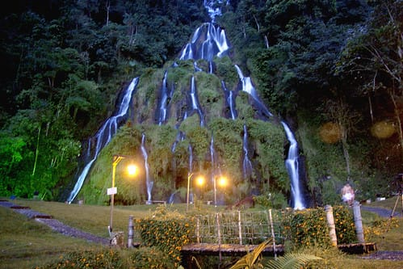
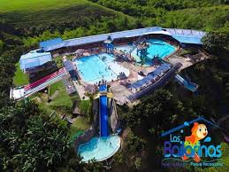
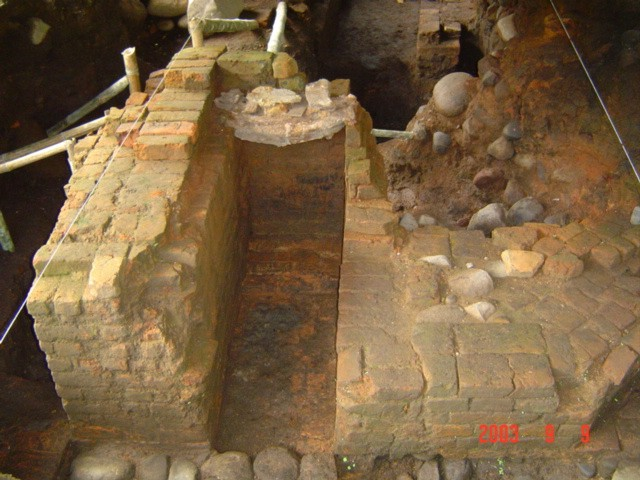

Tourist places

Hot Springs
Location: KM 10 Santarosa de Cabal.
Beautifull place.

The Dances
Location: KM 2 Montenegro-Quindío.
Beautifull place.
Plaza Bolivar
Location: Race 7 between Street 19 and 20.
Beautifull place.Here you will be able to find several biuldings, cafes and many restaurants. In general it is a meeting place.

El Salado de Consotá
Location: The outskirts of Pereira, near of UTP university.
Beautifull place.There is a saltwater well here, it is a meeting point for people.